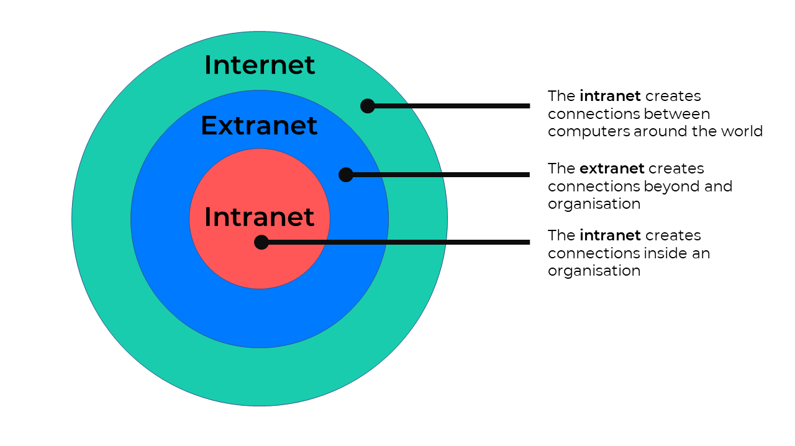

An intranet is a private network that is used within an organization to share information, resources, and communication among its members. It is typically accessible only to employees or authorized users of the organization and is not available to the general public.
Intranets are often used to facilitate internal communication, collaboration, and information sharing within a company. They can include features such as document management systems, employee directories, internal messaging systems, and access to company resources and applications.
Intranets can be accessed through web browsers and are typically protected by firewalls and other security measures to ensure that only authorized users can access the network. They play a crucial role in improving communication and productivity within organizations by providing a centralized platform for sharing information and resources.
A real-world example is Strathmore University's AMS (Academic Management System), which requires users to log in with their institutional credentials to access the system, therefore separating it from the public webpage viewed by unauthorized users.
Home Wi-Fi is also an example of a small-scale intranet.
